Landscape Architecture & Design
小林 祥起
Yoshitaka Kobayashi ／ 鐘軌
樹木は人よりも遥かに長く生き、過酷な試練を耐え抜いた上で、私達と触れ合っております。
Trees live far longer than humans, endure harsh trials, and only then come to touch our lives.
Pohon hidup jauh lebih lama dari manusia, menanggung ujian berat, lalu menyentuh kehidupan kita.
特別なことを成し遂げようとせず、ただ、昨日よりもほんの少しだけ、私たちの技術を磨き、彼らに触れる。その静かな積み重ねの先にこそ、樹木が誰にも見せたことのない「最高の姿」を現してくれる瞬間があると、私たちは確信しています。
We do not strive for something extraordinary — only to refine our craft a little more than yesterday, and to touch the trees with care. In that quiet accumulation lies the moment when a tree reveals its finest form to the world.
Kami tidak berusaha melakukan sesuatu yang luar biasa — hanya menyempurnakan keahlian sedikit lebih baik dari kemarin, dan menyentuh pohon dengan penuh perhatian. Dalam akumulasi yang tenang itulah tersembunyi momen ketika pohon menampilkan sosok terbaiknya.
Works を見る → View Works → Lihat Karya →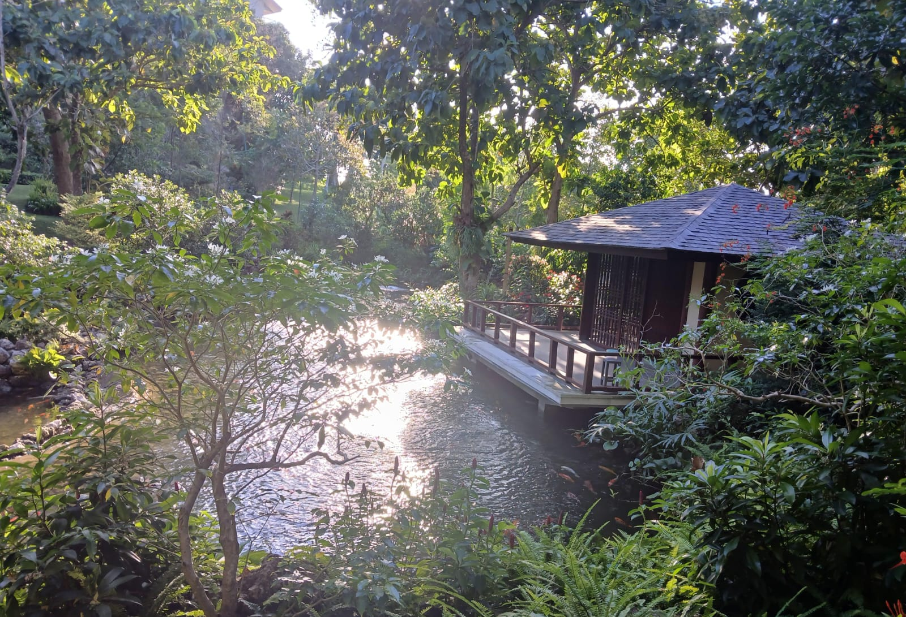

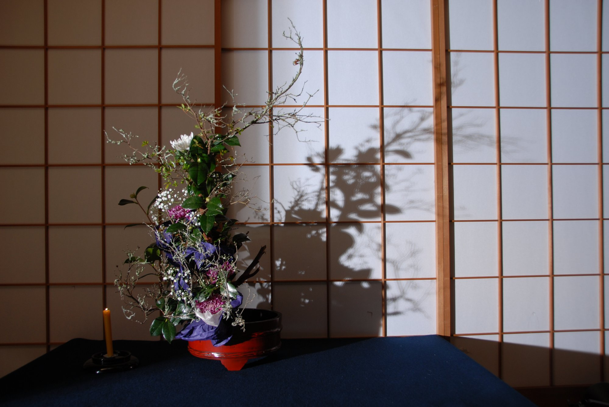
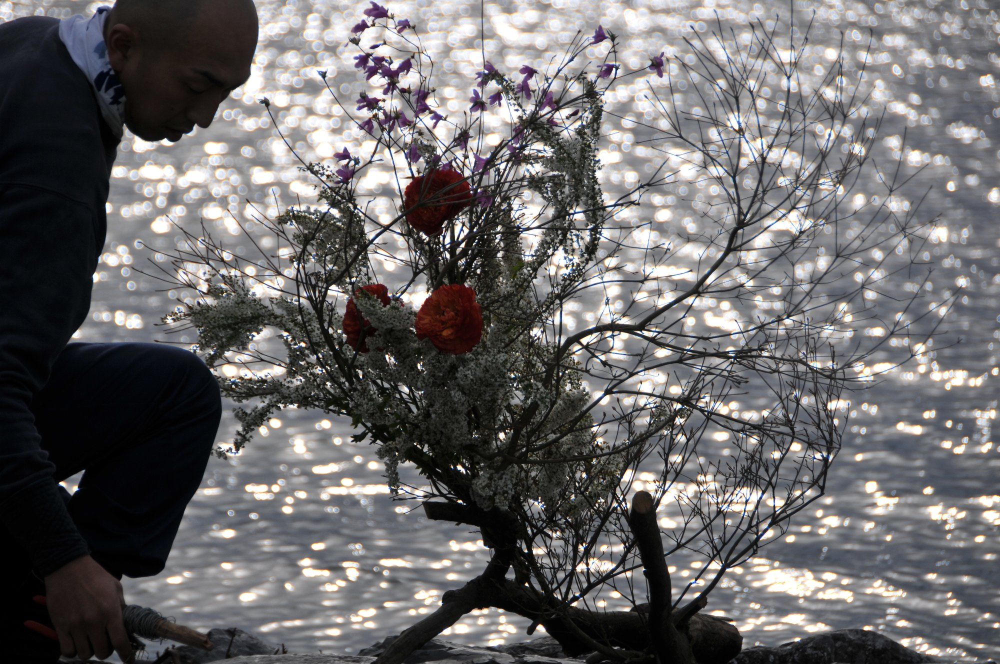
News
お知らせ News Berita
-
2025.06.01
Award IFLA Asia-Pacific Region Landscape Architecture Awards にて優秀賞を受賞いたしました。AYANA Resort「Tevana」茶室庭園にて、リード・リアライザー（複雑な設計コンセプトの理解と現場での実現）として参画。 We received the Excellence Award at the IFLA Asia-Pacific Region Landscape Architecture Awards. Participated in AYANA Resort "Tevana" Tea Room Garden as Lead Realizer — interpreting complex design concepts and realizing them on site. Kami meraih Penghargaan Unggulan di IFLA Asia-Pacific Region Landscape Architecture Awards. Berperan sebagai Lead Realizer di Taman Ruang Teh "Tevana" AYANA Resort — menafsirkan konsep desain yang kompleks dan mewujudkannya di lapangan.
-
2025.04.15
Press 専門誌『LANDSCAPE DESIGN』にAYANA Resort「Tevana」プロジェクトが掲載されました。 The AYANA Resort "Tevana" project was featured in the professional journal LANDSCAPE DESIGN. Proyek AYANA Resort "Tevana" ditampilkan dalam jurnal profesional LANDSCAPE DESIGN.
-
2024.10.01
Project Jakarta Garden City 地区・日系メガモールにてTevana 茶室空間を施工。リード・リアライザーとして、設計意図の読解と空間具現化として参画。 Worked on the Tevana tea room space at a Japanese mega mall in Jakarta Garden City. Participated as Lead Realizer — interpreting design intent and realizing spatial form. Mengerjakan ruang teh Tevana di mega mal Jepang Jakarta Garden City. Berperan sebagai Lead Realizer — menafsirkan maksud desain dan mewujudkan bentuk ruang.
-
2024.03.20
Event フローリストレビュー（『月刊フローリスト』主催）フラワーコンベンションにて入賞・誌面掲載。作品名：「懸り乱れ龍」 Won a prize at the Florist Review Flower Convention. Work title: "Kagari Midare Ryu." Meraih penghargaan di Konvensi Bunga Florist Review. Judul karya: "Kagari Midare Ryu."
Profile
プロフィール Profile Profil

小林 祥起
庭師名：鐘軌 ／ Yoshitaka Kobayashi
PT. TODOROKI 代表
1980年、京都の造園家「小林秀峰園」小林秀峰の長男として生まれる。京都庭常および「双葉造園」にて研鑽を積む傍ら、華道専慶流、茶道藤谷宗美氏に師事。京都の伝統文化を深く学ぶことで、庭師としての感性を研ぎ澄ます。
その後、世界各地の多様な景観を巡るランドスケープ研究の旅へ。気候や風土が形作る「庭」の本質を追求した末、2012年にインドネシア・バリ島へ拠点を移す。師である双葉造園への敬意を込め、その名の由来である「二つの八」を継承した「八十八騎（とどろき）/ PT. Todoroki Bali Zouen」を設立した。
現在はジャカルタにも拠点を広げ、インドネシア唯一の日本のランドスケープデザイン企業として活動。
Born in Kyoto, 1980.
Eldest son of landscape artist Hidehō Kobayashi of "Kobayashi Shūhōen." Trained at Kyoto Niwatsune and Futaba Zouen, while studying Kadō (Senkeiryu) and Chadō under Fujitani Sōbi.
A journey of discovery leads to Bali.
In 2012, he settled in Bali, Indonesia, founding "PT. Todoroki Bali Zouen." Now with operations also in Jakarta, PT. TODOROKI is Indonesia's only Japanese landscape design firm.
Lahir di Kyoto, 1980.
Putra sulung seniman taman Hidehō Kobayashi. Berlatih di Kyoto Niwatsune dan Futaba Zouen, sekaligus mempelajari Kadō dan Chadō.
Perjalanan penuh penemuan menuju Bali.
Pada 2012, ia mendirikan "PT. Todoroki Bali Zouen" di Bali. Kini juga beroperasi di Jakarta sebagai satu-satunya perusahaan desain lanskap Jepang di Indonesia.
Awards & Recognition

IFLA Asia-Pacific Region Landscape Architecture Awards — 優秀賞
国際造園家連盟（IFLA）アジア太平洋地域賞 優秀賞。対象：AYANA Resort「Tevana」茶室庭園。役割：リード・リアライザー（Lead Realizer）として、複雑な設計コンセプトの理解と現場での実現を担当。
Excellence Award from IFLA Asia-Pacific Region. Project: AYANA Resort "Tevana Garden" Tea Room Space. Role: Lead Realizer — interpreting complex design concepts and realizing them on site.
Penghargaan Unggulan dari IFLA Asia-Pacific. Proyek: AYANA Resort "Tevana Garden." Peran: Lead Realizer — menafsirkan konsep desain yang kompleks dan mewujudkannya di lapangan.

専門誌『LANDSCAPE DESIGN』掲載
AYANA Resort「Tevana」プロジェクトが造園専門誌『LANDSCAPE DESIGN』に掲載。
The "Tevana" project was published in the journal LANDSCAPE DESIGN.
Proyek "Tevana" diterbitkan dalam jurnal LANDSCAPE DESIGN.

フローリストレビュー 入賞（『月刊フローリスト』主催）
フラワーコンベンションにて入賞・誌面掲載。出展作品名：「懸り乱れ龍（かがりみだれりゅう）」
Prize at the Florist Review Flower Convention. Work: "Kagari Midare Ryu" (Entwining Dragon of Chaos).
Penghargaan di Konvensi Bunga Florist Review. Karya: "Kagari Midare Ryu."
Project Highlights
施工実績 Works Karya
Hospitality & Commercial
-
AYANA Resort and Spa（Bali）Landscape Design & Site Direction / Lead Realizerラウンジ「After Rock」・日本食レストラン「本膳」ランドスケープデザインおよび現場指揮。茶室庭園「Tevana」ではリード・リアライザー（Lead Realizer）として、複雑な設計コンセプトの理解と現場での実現を担当。
→ IFLA Asia-Pacific Awards 優秀賞受賞 Landscape design and site direction for "After Rock" lounge and "Honzen" Japanese restaurant. For the tea room garden "Tevana," served as Lead Realizer — interpreting complex design concepts and realizing them on site. → IFLA Asia-Pacific Awards Excellence Award Desain lanskap untuk lounge "After Rock" dan restoran Jepang "Honzen." Untuk taman teh "Tevana," berperan sebagai Lead Realizer — menafsirkan konsep desain yang kompleks dan mewujudkannya di lapangan. → IFLA Asia-Pacific Awards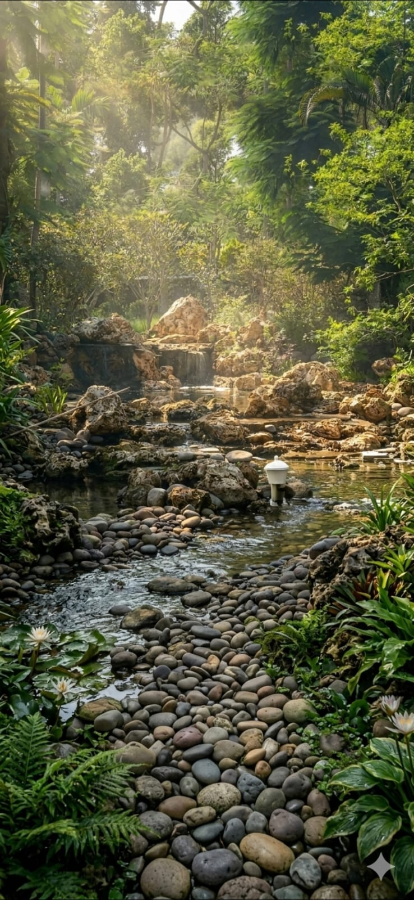
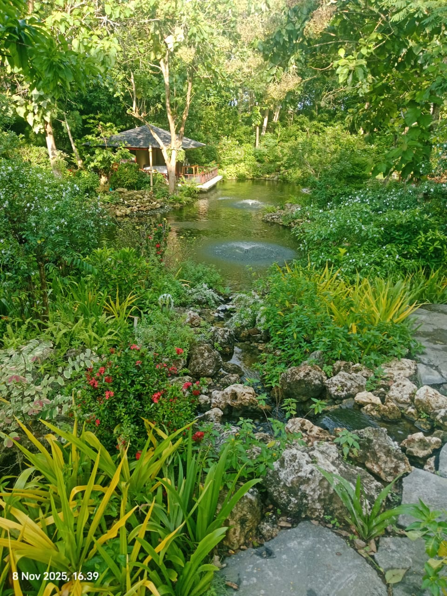
-
Hotel Indonesia Kempinski（Jakarta）Garden Design & Construction日本食レストラン「OKU」：庭園設計・施工。 Garden design and construction for Japanese restaurant "OKU." Desain dan konstruksi taman untuk restoran Jepang "OKU."
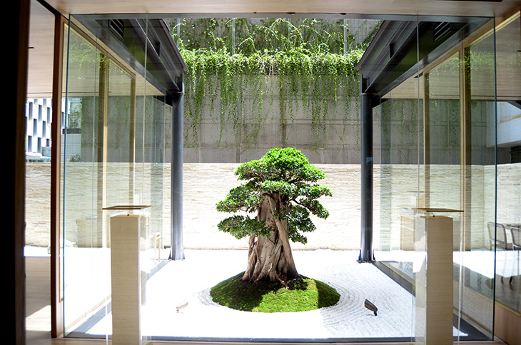
-
AXIA South CikarangLandscape & Maintenance日系サービスアパートメント：造園および景観維持管理。 Landscaping and ongoing maintenance for a Japanese service apartment complex. Lansekap dan pemeliharaan untuk kompleks apartemen servis Jepang.Photo: 確認中
-
デルタマス地区・高級レジデンス（日本人学校隣接） Deltamas District — Luxury Residence Kawasan Deltamas — Hunian MewahLandscape Master Plan日系コミュニティの中核となる、モダン・ラグジュアリーなアパートメントの景観設計。 Landscape design for a modern luxury apartment complex serving as the core of the Japanese community. Desain lanskap untuk kompleks apartemen mewah sebagai pusat komunitas Jepang.Photo: 確認中
-
日系大型商業施設（BSD / Jakarta Garden City） Japanese Mega Mall（BSD / Jakarta Garden City） Mega Mal Jepang（BSD / Jakarta Garden City）Landscape Master Plan日系メガモールのランドスケープ・マスタープラン策定。 Landscape master plan for a Japanese mega mall. Master plan lanskap untuk mega mal Jepang.Photo: 確認中
Industrial & Research
-
YKK Indonesia FactoryJapanese Garden & Landscape Management敷地内日本庭園の造園および景観管理。 Construction and management of a Japanese garden on factory grounds. Pembangunan dan pengelolaan taman Jepang di area pabrik.Photo: 確認中
-
大手日系自動車メーカー 生産拠点（デルタマス工業団地） Major Japanese Automaker — Production Site (Deltamas) Produsen Otomotif Jepang — Lokasi Produksi (Deltamas)Environmental Greening Project工場敷地内における環境整備および緑化プロジェクト。 Environmental improvement and greening project on factory premises. Proyek perbaikan lingkungan dan penghijauan di pabrik.Photo: 確認中
-
日系化学・日用品メーカー 研究施設 Japanese Chemical & Consumer Goods — Research Facility Produsen Kimia & Barang Konsumen Jepang — Fasilitas RisetLandscape Construction & Soil Researchランドスケープ施工、および現地の土壌に適した肥料の研究・実施。 Landscape construction and research into locally adapted fertilizers. Konstruksi lanskap dan penelitian pupuk yang disesuaikan dengan tanah lokal.Photo: 確認中
-
日系自動車関連 パートナー企業 Japanese Automotive Partner Companies Perusahaan Mitra Otomotif JepangExterior & Landscape Design施設外構および景観デザインの構築。 Exterior and landscape design for facilities. Desain eksterior dan lanskap untuk fasilitas.Photo: 確認中
Private Collection
華道・プライベートコレクション Kadō & Private Collection Koleksi Kadō & Pribadi
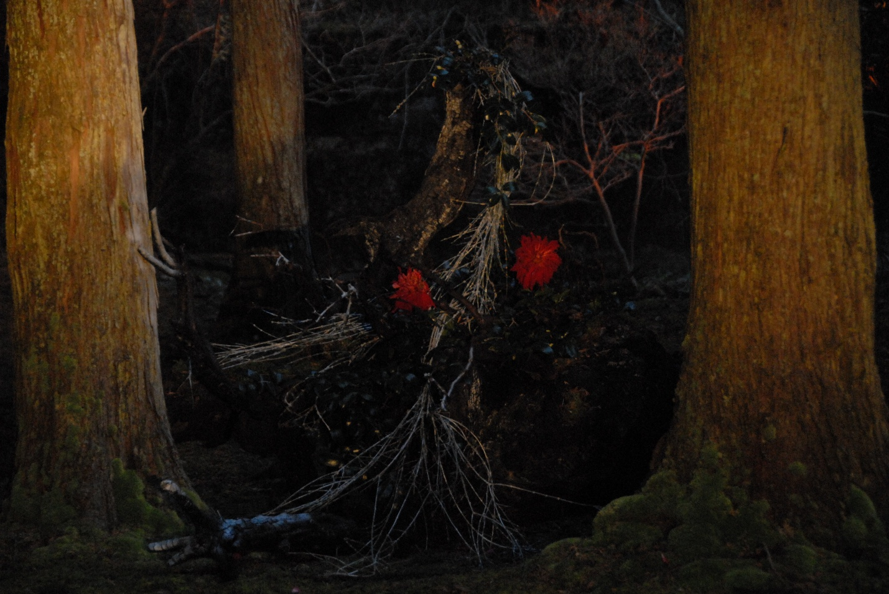
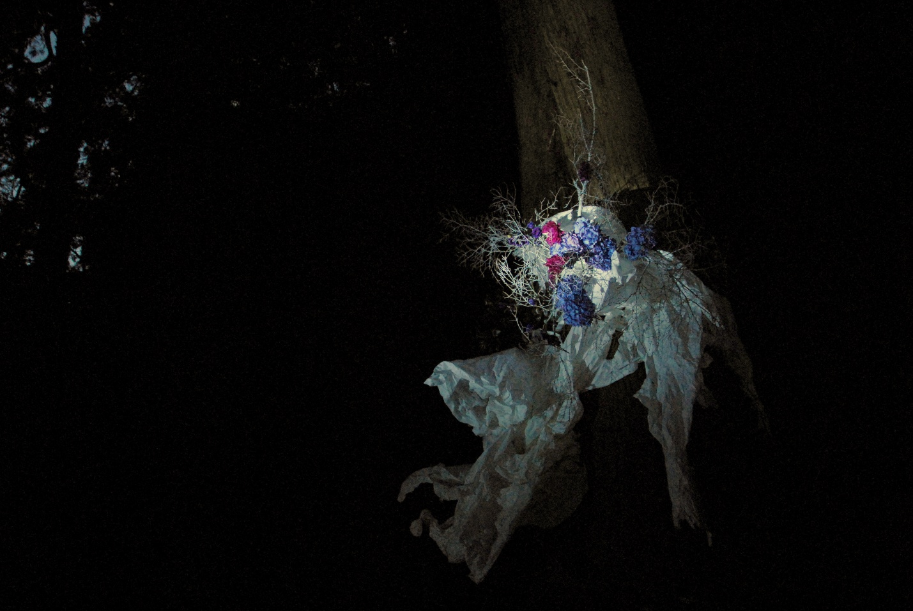
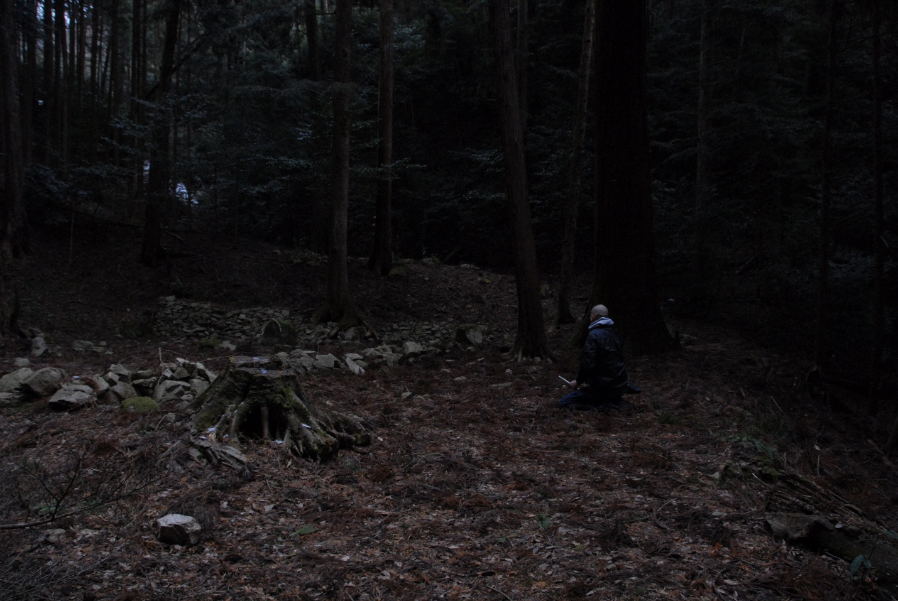
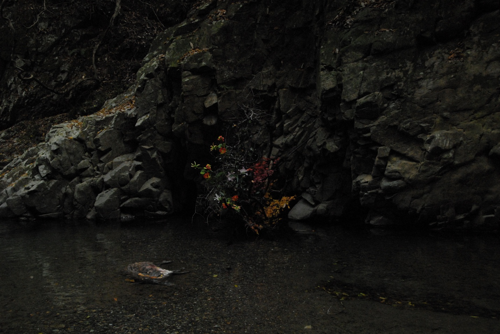
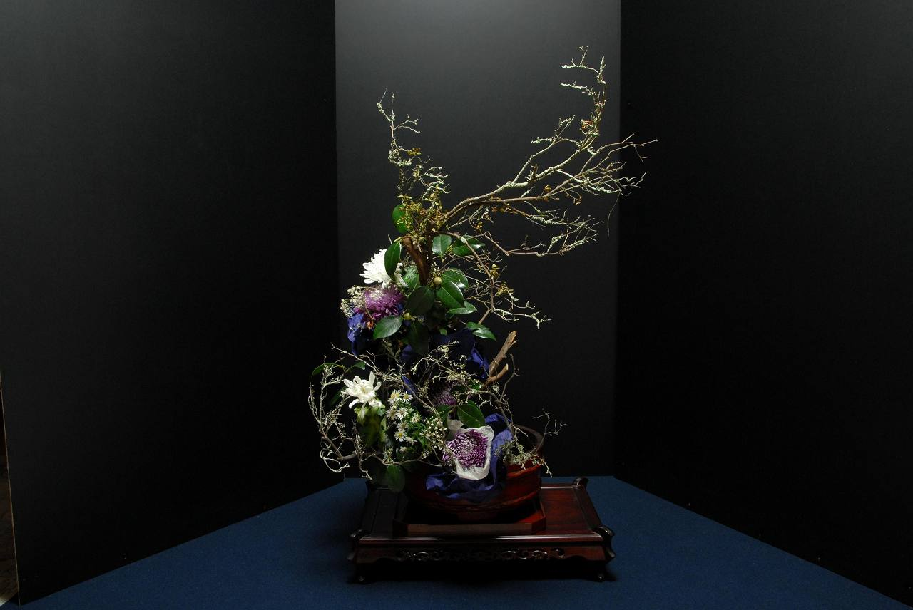
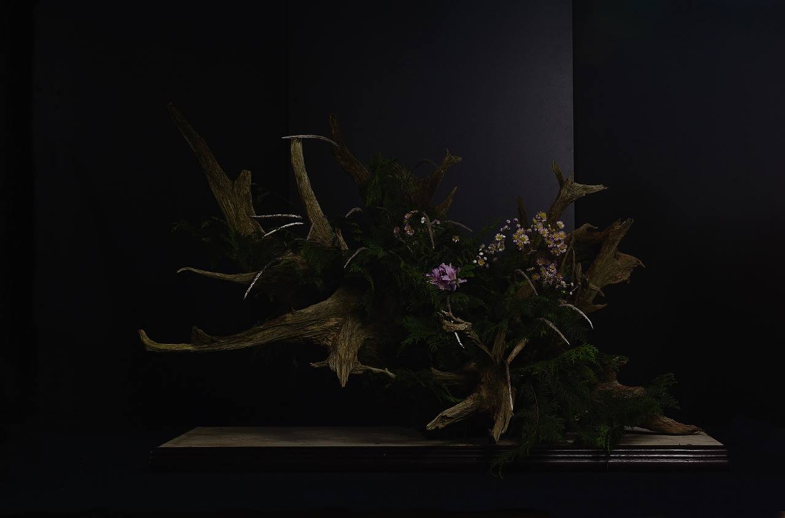
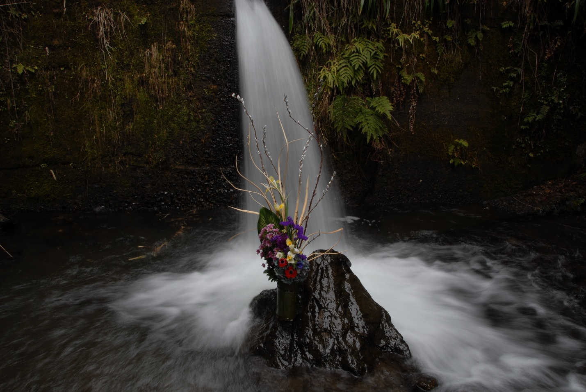
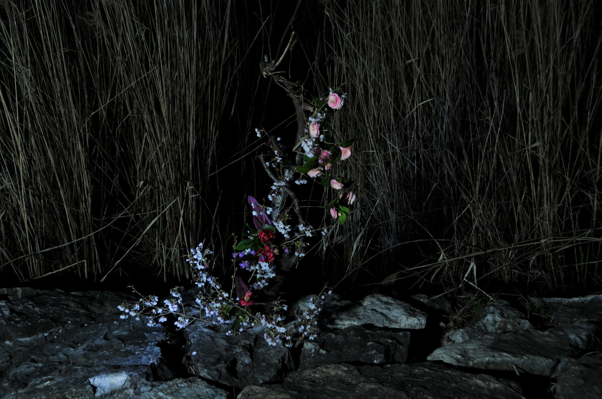
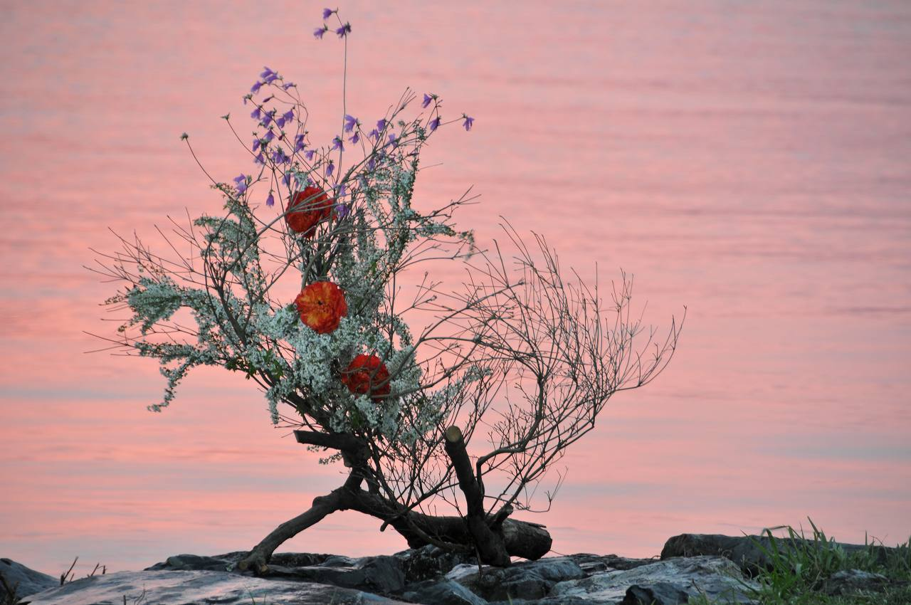
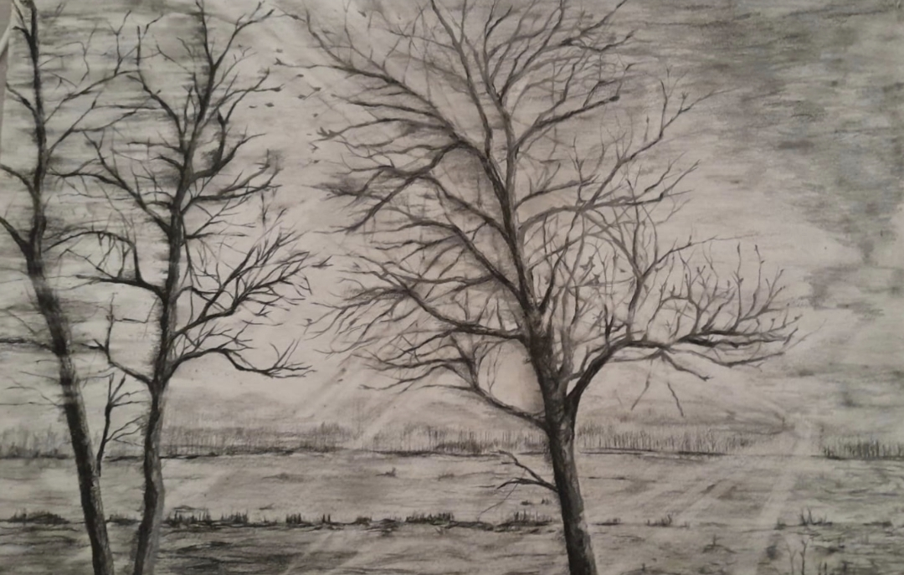
あの壮大な運命の胎動を、筆に込めました。 Inspired by Jirō Asada's "Chūgen no Niji" — imbuing the brush with the mighty stirring of destiny. Terinspirasi dari "Chūgen no Niji" karya Jirō Asada — menuangkan geliat takdir yang agung ke dalam kuas.
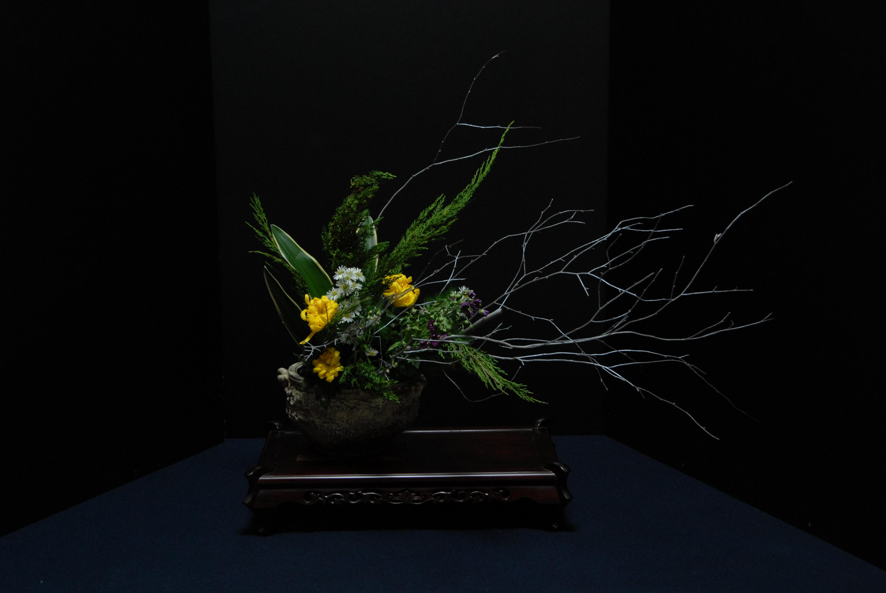
Contact
お問い合わせ Contact Kontak
プロジェクトのご相談、お見積もり、取材・掲載のご依頼など、お気軽にご連絡ください。インドネシア（バリ島・ジャカルタ）国内のみならず、日本および海外からのご依頼も歓迎いたします。 We welcome inquiries about project consultations, estimates, and media coverage — from Indonesia, Japan, and beyond. Kami menerima pertanyaan mengenai konsultasi proyek, estimasi, dan peliputan media — dari Indonesia, Jepang, dan seluruh dunia.